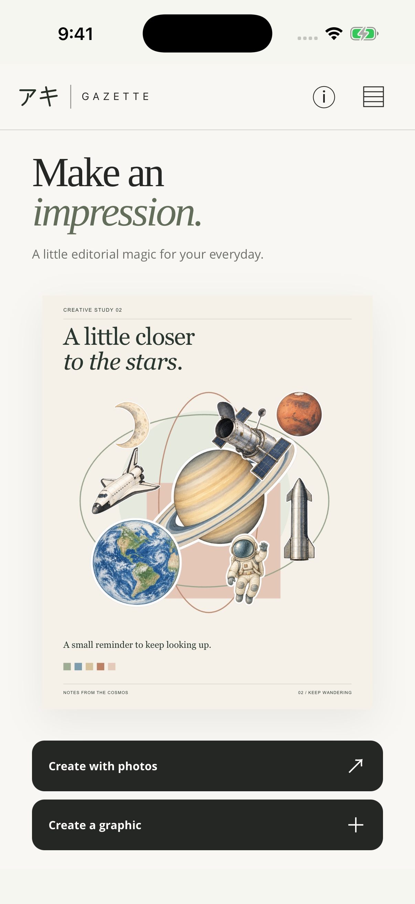
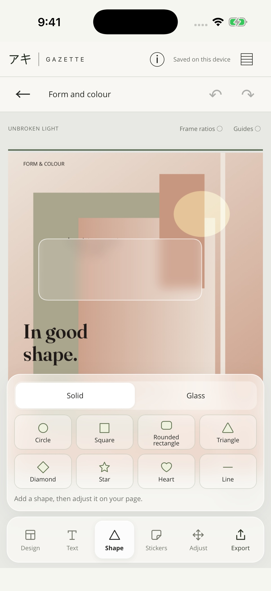
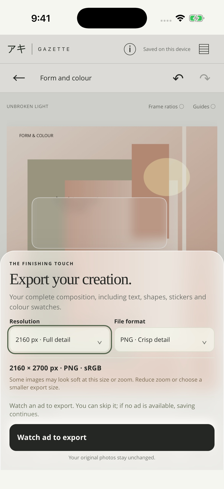

The editor / A closer look
A little practice.
A page of your own.
Begin with photographs or a graphic. Choose your purpose and design, then make the page your own.
This guide and its native screenshots illustrate iOS 1.2.3 (15).
Start here / Photos or graphics
Choose your starting point.
- Choose Create with photos to import 1–9 images, or Create a graphic to start with type and shapes.
- For photos, choose Photo Story, Portfolio, Reflection, Announcement or Promotion. Graphics offer Reflection, Announcement and Promotion.
- Browse the fitting samples in Design. Try another design changes the arrangement while preserving your words.
- The new space-inspired home screen offers both creation actions. Choose one to open your own composition.
In Adjust, pinch outside selected text to scale lettering. Pinch inside or use side handles to change its wrapping width. Shape side handles change width; top and bottom handles change height. Inside a photo frame, gestures adjust the crop; outside it, they move and resize the frame.

01 / Your process
Your photographs. Your framing.
Preview changes the photograph inside a frame. It keeps the frame’s position on the page.
- Tap a photograph to select it. Open Framing: Fill frame covers the frame and may crop the edges; Fit whole photo keeps the complete photograph visible.
- Drag the photograph to reposition it. Pinch inside its frame to zoom into the crop. Reset returns the crop to its starting point.
- Replace chooses another photograph for that frame. Remove takes it out of the composition; Undo can bring it back.
- To swap two photographs, hold one, then drag it onto the other frame and release.
Panels have no close button: tap outside to dismiss them. When Design or Content is open, the first tap outside only closes the panel. Tap again to select a photograph.
02 / Your process
Give each element its place.
Adjust moves and styles frames, text, shapes and the colour swatch group. Compact floating tools keep the preview in place. The latest update refines dragging for smoother movement, including glass and blended items.
- Tap Adjust, then tap an item to select it. Tap it again to deselect, or tap another item to switch.
- Drag to move a selected item. For text, pinch outside to scale lettering; pinch inside or drag a side handle to change wrapping width. For photos, inside gestures adjust the crop and outside gestures change the frame.
- Alignment guides and snapping help with placement and familiar angles. Release your fingers to keep the change; Undo and Redo let you explore.
- Tap an item icon for its floating tools: font and colour for text, shape and material for shapes, plus opacity, blending and Layers. Drag a slider’s thumb to change a value. Reset returns the item to its layout position; Done returns to Preview.
- Open Layers. Hold anywhere on an item’s row, then drag to reorder it; there is no separate handle. Swipe without holding to scroll.
- Hold an item on the page to reveal Duplicate, then tap the action to make a copy.
Words and shapes
In Preview, tap a text block to select it, then tap again to open an enlarged editor above your usual keyboard. The main preview keeps its size while you type. Choose left, centre, right or justify without closing the keyboard. Tap outside or choose Done to apply the text and alignment. Content also offers up to eight extra text blocks. Add shapes from Content, choose Solid or Glass, then use Adjust for colour, outline, opacity, blur and tint. Sixteen blend modes offer different ways to combine items.
With a hardware keyboard, arrow keys nudge a selected item and Escape deselects it when you are not typing.

03 / Your process
An image to keep.
- Tap Export. Choose PNG for crisp detail or JPEG for a familiar photo format.
- For screen formats, choose a width of 1080, 1440 or 2160 px. A4 exports at 2480 × 3508 px; 4R at 1200 × 1800 px, both with 300 dpi metadata. Gazette shows the finished dimensions before export.
- Select Watch ad to export, then choose Save to Photos, Save to Files or Share…. Gazette is free with export ads. A skipped, dismissed or unavailable ad still allows saving.
Your originals stay unchanged. A PNG or JPEG is a finished, flattened image; it does not retain separate editable text and frames.
Reopen an editable composition through Saved projects on the same device. Local projects are not cloud backups. Deleting the app or clearing its data can remove them, so keep exported images somewhere you want to preserve them.
Having trouble saving? Visit Gazette support.

Try a page of your own.
Check the TestFlight invitation for public availability. See the release availability note before installing. The Android build is prepared; a public Google Play download is not available yet.
No Gazette account is required. Editor resources and fonts are bundled in the app; advertising and consent use a connection. Read the privacy policy for details.
Installation instructions